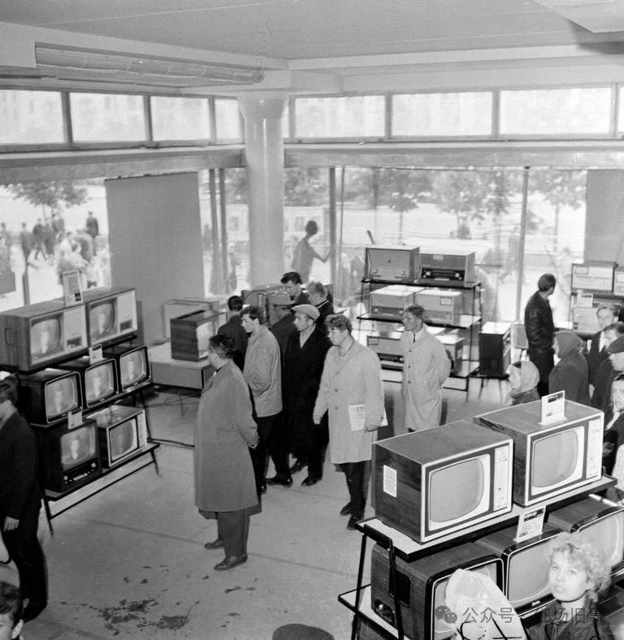
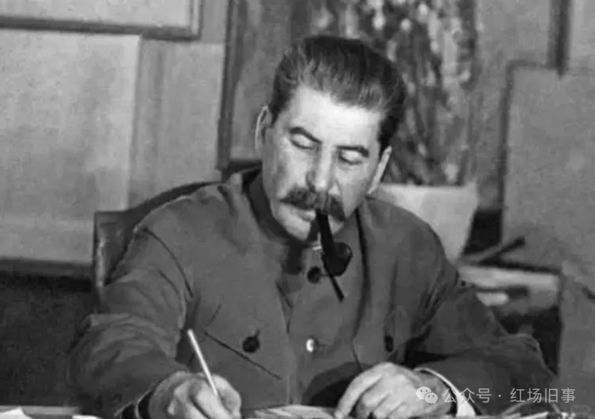
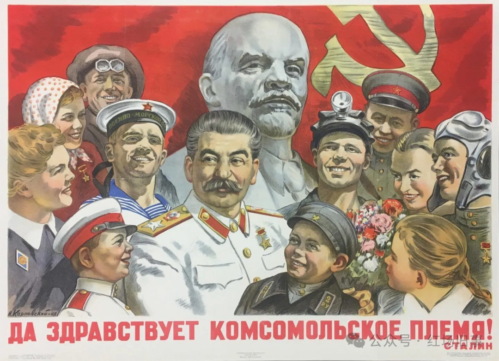
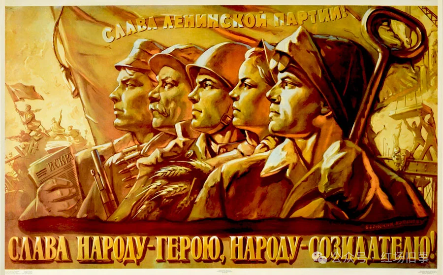

新经济政策（NEP）：苏联唯一“市场经济”实验，为何7年就戛然而止？
文字与图片版权归各自权利人所有。 查看公众号原文 ↗
莫斯科街头的私营商店、富有的“耐普曼”和新经济政策下的繁荣市场，构成了一幅苏联历史上绝无仅有的资本主义与社会主义并存的时代画卷。1923年的莫斯科，列宁格勒大街新开的时装店橱窗里陈列着巴黎最新款式的连衣裙，穿着考究的顾客络绎不绝。不远处的小酒馆里，商人正用刚从银行取出的卢布结算一笔毛皮生意。

在苏联国营百货商店货架空空如也的同时，私营店铺里却堆满了各式商品。这便是苏联新经济政策时期独特的场景——一场苏维埃政权自己主导的“市场经济”实验，从1921年持续到1928年，成为苏联计划经济和战时共产主义之间最特殊的一段时光。
01 政策转向内战结束后，苏联面临严重经济危机，余粮收集制引发农民强烈不满，工农联盟濒临破裂。1921年3月，列宁推动俄共（布）第十次代表大会通过决议，实施以粮食税代替余粮收集制的新经济政策。“我们第一次开辟了各种经济力量、各种经济成分互相繁荣的可能性。”布哈林后来这样评价。政策的核心是允许市场关系的存在，承认农民对剩余产品的支配权，允许私营工商业在一定范围内发展。列宁将其视为“以退为进”的战略迂回，在无产阶级掌握经济命脉的前提下，利用资本主义发展生产力。这项政策变化被布哈林称为“新经济政策的最深刻的意义”。
02 市场实验新经济政策实施后，苏联经济迅速活跃起来。1921年最后三个月，领到经商执照的就有18.5万人，到1922年底猛增至五十多万人。私营商业以售货车、摊贩和货亭等形式迅速扩散。1922-1923年度，私营商业在零售商业流转额中所占份额高达75.3%，甚至在批发行业也占据35.8%的份额。在工业生产领域，政府允许私人经营手工业企业，可以雇佣10-20人的小型工业企业。到1925年下半年，已有1786家私人工业企业，小工业产值恢复到1913年水平的96.1%。列宁坦承，从建设社会主义的角度看，利用市场和资本主义成分恢复经济“对于我们是有利的”。市场成为连接城市和农村的“唯一可能的纽带”。
03 耐普曼崛起随着私营经济的发展，苏联社会出现了一个新的社会阶层——“耐普曼”。这个词由新经济政策缩略语与“狂热爱好者”的复合后缀构成，指代那些从事私营工商业的小店主、小厂主及投机商。耐普曼最初被俄共定义为“资本主义分子”，后划为“新资产阶级”。他们成为新经济政策最典型的象征。1923年全国有私营商业店铺三十七万多家，其中五万二千多家集中在莫斯科、彼得格勒两市和莫斯科省。这些私营商业店铺主要经营轻工业产品，特别是紧缺的日用生活必需品，成为当时农民和城市联系的主要途径。据数据，在1926-1927年间，非农业人口人均收入为315.3卢布，而耐普曼私人业主的人均收入高达2079.5卢布。收入差距引起了社会的广泛关注和党内的高度警惕。
04 两条路线围绕新经济政策的未来，苏联党内形成了两种主要观点。以布哈林为代表的温和派认为，苏联应通过市场关系渐进过渡到社会主义，他提出了著名的口号“发财吧，积累吧，发展自己的经济吧”。布哈林认为，新经济政策使苏联找到了在无产阶级国家掌握经济命脉的同时，通过各种经济成分相互促进发展生产力的“进化类型”道路。他主张保持“无产阶级与农民之间在经济方面的正确相互关系”。托洛茨基则强调新经济政策应以发展国有大工业为中心，以此平衡工农业，使社会主义因素主导资本主义因素。他坚持必须通过市场走向社会主义的观点。随着列宁健康状况恶化并于1924年去世，围绕新经济政策的争论日益激烈，苏联的经济发展道路走到了十字路口。
05 粮食危机1927年秋，苏联出现了严重的粮食收购危机。这场危机成为新经济政策命运转折的关键点。面对危机，斯大林与布哈林等人产生了根本分歧。布哈林、李可夫等坚持要继续执行新经济政策。他们认为应通过提高农产品价格和经济手段解决粮食收购问题，保持与农民的正常关系。

斯大林则认为，继续执行新经济政策会放缓国家的工业化进程，甚至可能导致联共（布）丧失国家领导权。他主张通过农业集体化来保证工业化的完成。这一争论本质上是对国家发展道路的不同选择：是继续通过市场关系渐进过渡，还是转向快速工业化和农业集体化的激进道路。
06 政策终结斯大林最终战胜了布哈林，1928年新经济政策被逐步废除。1927年底，苏联通过严厉镇压使耐普曼在经济生活中消失。

新经济政策的终结标志着苏联放弃“渐进改良”路线，转向以“超工业化”和强制农业集体化为特征的斯大林模式。这一转变与当时的国际环境、党内力量对比以及苏联迅速实现工业化的迫切需求密切相关。布哈林的理论虽然有其合理性，但在当时情况下“无法解决当时需要解决的迫切问题，难以得到认同”。新经济政策实施短短几年，使残破不堪的苏维埃经济迅速出现了百业兴旺的活跃局面。在某种程度上，这是苏联版的“改革开放”，其留下的经验教训至今仍有启示意义。

1928年后，耐普曼被彻底清除出苏联经济生活。莫斯科街头的私营店铺一夜间消失了，橱窗里巴黎时装被清一色的工装取代。市场交易的喧嚣被五年计划的机器轰鸣所取代，“发财吧”的口号被集体农庄的劳动号子淹没。直到数十年后，人们仍不禁思考：如果那条更加温和的“渐进改良”道路得以继续，苏联和世界的历史是否会有所不同？